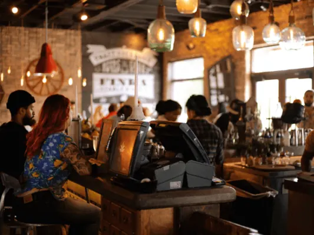
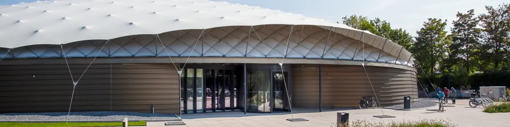
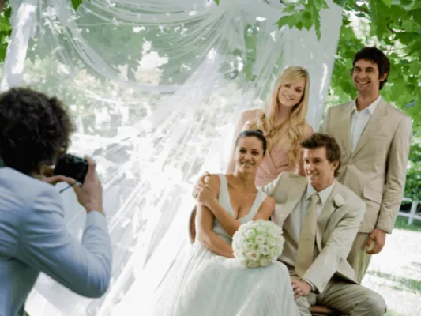
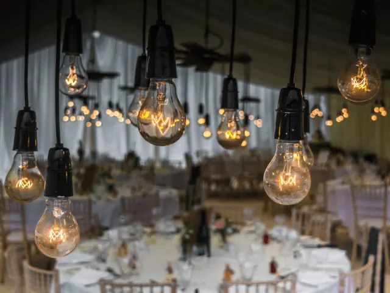
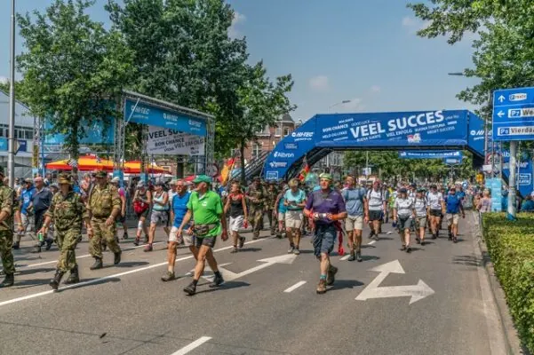
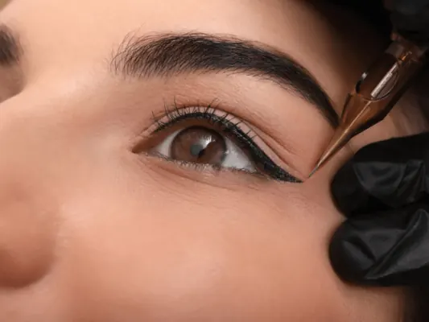
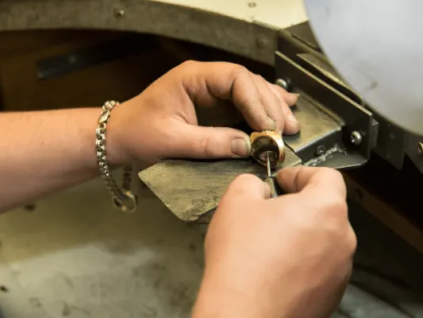

Gidsen over Nijmegen
Alles over één onderwerp op één plek. Elke gids bundelt onze artikelen, tips en antwoorden op veelgestelde vragen.

Restaurants in Nijmegen
De beste adressen per keuken en per gelegenheid, van lunch tot diner.
28 artikelen
Cafés in Nijmegen
Historische kroegen, biercafés, eetcafés en uitgaan.
5 artikelen
Musea in Nijmegen
Musea, historische kerken, film en cultuur.
6 artikelen
Trouwen in Nijmegen
Trouwlocaties, fotograaf, jurk, ringen, muziek en een handige checklist.
16 artikelen
Zaal huren in Nijmegen
Locaties voor feesten, vergaderingen en teamuitjes.
4 artikelen
Nijmeegse Vierdaagse
Afstanden, voorbereiding, blessures voorkomen en overnachten.
5 artikelenFotografie in Nijmegen
Een fotograaf kiezen en de mooiste fotospots.
4 artikelen
Overnachten in Nijmegen
Hotels, Airbnb's, vakantieparken en campings.
10 artikelen
B&B in Nijmegen
Bed and breakfasts in Nijmegen, Groesbeek en Wijchen.
3 artikelen
Campings in Nijmegen
Campings, camperplaatsen en een handige paklijst.
3 artikelen
Kappers in Nijmegen
Kapsalons, barbiers en tips voor je haar.
7 artikelenMassage in Nijmegen
Soorten massage, salons en wat je kunt verwachten.
3 artikelen
Nagelsalon in Nijmegen
Manicure, gellak en nagelverlenging, en een goede salon kiezen.
2 artikelen
Pedicure in Nijmegen
Luxe en medische pedicure, en voetverzorging thuis.
4 artikelen
Permanente make-up in Nijmegen
Hoe het werkt, voor wie het is en waar je op let.
6 artikelenStuderen in Nijmegen
Een kamer vinden en wegwijs worden in de stad.
7 artikelen
Cursussen in Nijmegen
Talen, edelsmeden, houtbewerking, fotografie en meer.
14 artikelen
Ondernemen in Nijmegen
Starten, subsidies, financiering, marketing en netwerken.
15 artikelen
Winkelen in Nijmegen
Speciaalzaken, kringloop en waar je parkeert.
5 artikelen